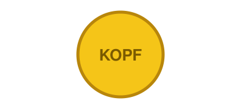
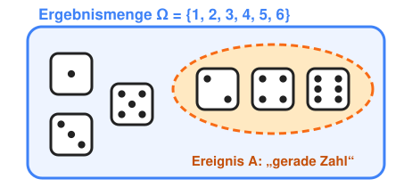
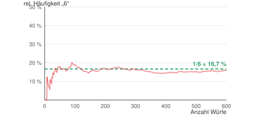
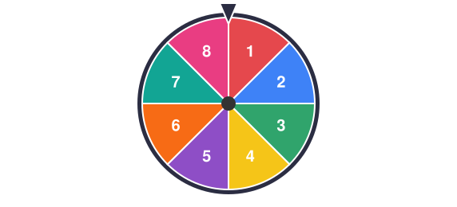

<!doctype html>
<html lang="de">
<head>
<meta charset="utf-8">
<meta name="robots" content="noindex, nofollow">
<meta name="viewport" content="width=device-width, initial-scale=1, viewport-fit=cover">
<title>Mathe: Zufall und Wahrscheinlichkeit</title>
<meta name="hub:area" content="kl7">
<meta name="hub:subject" content="Mathe">
<meta name="hub:desc" content="Zufallsexperiment, Ergebnis und Ereignis, relative Häufigkeit, Gesetz der großen Zahlen, Laplace-Regel, Summen- und Komplementärregel · 51 Aufgaben">
<meta name="hub:order" content="20">
<link rel="stylesheet" href="../../fonts/fonts.css">
<link rel="stylesheet" href="../../engine/quiz.css">
<script src="../../hub.js"></script>
</head>
<body>
<div class="wrap"></div>
<script>
// Klasse 7, Kapitel "Zufall und Wahrscheinlichkeit" (EDM 7, 4.4–4.6, S. 136–153) plus Heftnotizen und Arbeitsblätter vom 28.09.–06.11.2026.
// Alle Prozent-Antworten: "25", "25 %" oder "25%" gehen. Alle Lösungen in Python nachgerechnet.
// 6×6-Tabelle der Augensummen für die Erklärungen
const sumTable = (() => {
  let h = '<table class="qtable" style="font-size:13px"><tr><th>+</th>';
  for (let b = 1; b <= 6; b++) h += '<th style="text-align:center;color:#e5484d">' + b + '</th>';
  h += '</tr>';
  for (let a = 1; a <= 6; a++) {
    h += '<tr><th style="color:#3e82f7">' + a + '</th>';
    for (let b = 1; b <= 6; b++) h += '<td style="text-align:center' + (a + b === 7 ? ';background:#ffe9c2;font-weight:700' : '') + '">' + (a + b) + '</td>';
    h += '</tr>';
  }
  return '<div class="tblwrap">' + h + '</table></div>';
})();

window.TEST = {
  key: "mathe-wahrscheinlichkeit-v1",
  title: "Zufall und Wahrscheinlichkeit",
  eyebrow: "Mathe · Klasse 7 · EDM 7",
  subject: "Mathe",
  intro: "Erst den Lernteil anschauen, dann testen. Prozente kannst du mit oder ohne %-Zeichen eintippen. Rechne auf dem karierten Feld mit Finger oder Apple Pencil.",
  learn: [
    { title: "Zufallsexperiment",
      intro: "Ein <b>Zufallsexperiment (ZE)</b> hat drei Merkmale:<br>① Das Ergebnis ist <b>nicht vorhersehbar</b>.<br>② Es ist <b>unter gleichen Bedingungen beliebig oft wiederholbar</b>.<br>③ Sein Ergebnis ist <b>eines von mehreren möglichen Ausgängen</b>." + '',
      tip: "Beispiele: Münzwurf, Würfeln, Glücksrad, Lotto, Karte ziehen. Keine ZE: Wasser siedet bei 100 °C (vorhersehbar), Basketballwurf (Geschick), das Wetter (nicht unter gleichen Bedingungen wiederholbar)." },
    { title: "Ergebnis, Ergebnismenge, Ereignis",
      intro: "Ein <b>Ergebnis</b> ist ein möglicher Ausgang eines ZE. Die <b>Ergebnismenge Ω</b> (Omega) fasst alle Ergebnisse zusammen: Würfel Ω = {1, 2, 3, 4, 5, 6}, Münze Ω = {Kopf, Zahl}.<br>Ein <b>Ereignis</b> ist eine Teilmenge der Ergebnismenge, es besteht aus einem oder mehreren Ergebnissen: A: „gerade Zahl“ → A = {2, 4, 6}." + '',
      tip: "Ergebnis = <b>ein</b> konkreter Ausgang. Ereignis = eine <b>Menge</b> von Ergebnissen, die einen Sachverhalt beschreibt." },
    { title: "Relative Häufigkeit und Gesetz der großen Zahlen",
      intro: "<b>Absolute Häufigkeit</b>: wie oft etwas vorkommt (z. B. 20-mal).<br><b>Relative Häufigkeit</b> = absolute Häufigkeit : Anzahl aller Versuche (z. B. 20 : 50 = 0,4 = 40 %).<br><b>Gesetz der großen Zahlen:</b> Wird ein ZE sehr oft durchgeführt, stabilisiert sich die relative Häufigkeit eines Ergebnisses um einen festen Wert zwischen 0 und 1 (0 % und 100 %). Dieser feste Wert heißt <b>Wahrscheinlichkeit</b> des Ergebnisses." + '',
      tip: "Bei wenigen Würfen schwankt die relative Häufigkeit stark, bei sehr vielen kaum noch. Der Zufall hat kein Gedächtnis: Auch nach 16 Würfen ohne Sechs ist P(6) = 1/6." },
    { title: "Wahrscheinlichkeit, Summenregel",
      intro: "Die Wahrscheinlichkeit P eines Ergebnisses liegt immer <b>zwischen 0 und 1</b> (0 % und 100 %). Alle Wahrscheinlichkeiten eines ZE ergeben zusammen <b>1</b> (100 %).<br><b>Summenregel:</b> Die Wahrscheinlichkeit eines Ereignisses ist die Summe der Wahrscheinlichkeiten seiner Ergebnisse.<br>Beispiel Lego-Vierer: P(ungerade) = P(1) + P(3) + P(5) = 0,48 + 0,06 + 0,06 = 0,60 = 60 %.",
      tip: "Ein Ereignis mit P = 1 heißt <b>sicheres Ereignis</b>, eines mit P = 0 <b>unmögliches Ereignis</b>." },
    { title: "Laplace-Experiment und Laplace-Regel",
      intro: "Sind alle Ergebnisse <b>gleich wahrscheinlich</b>, heißt das ZE <b>Laplace-Experiment</b>. Bei n möglichen Ergebnissen hat jedes die Wahrscheinlichkeit <b>1/n</b>.<br><b>Laplace-Regel:</b> P(E) = Anzahl der Ergebnisse, die zum Ereignis gehören : Anzahl aller möglichen Ergebnisse.<br>Beispiel Skatblatt: P(Herz) = 8/32 = 1/4 = 25 %." + '',
      tip: "Laplace: Münze, normaler Würfel, Kugel aus dem Sack, Karte ziehen, Glücksrad mit gleich großen Feldern. Kein Laplace: Reißzwecke, Kronkorken, Lego-Stein, Schweinchen-Würfel, Glücksrad mit ungleichen Feldern." },
    { title: "Gegenereignis (Komplementärregel)",
      intro: "Das <b>Gegenereignis Ē</b> enthält alle Ergebnisse, die <b>nicht</b> zu E gehören. Es gilt: <b>P(E) + P(Ē) = 1</b>, also P(Ē) = 1 − P(E).<br>Beispiel: P(keine 4 beim Lego-Vierer) = 1 − 0,28 = 0,72 = 72 %.",
      tip: "Nimm das Gegenereignis, wenn es weniger Ergebnisse hat. „Nicht Apple Music“ ist schneller: 100 % − 19 % = 81 %." }
  ],
  questions: [
    // ---- Teil A: Zufallsexperiment ----
    { part: "Teil A · Zufallsexperiment", type: "mc", prompt: "Welches ist <b>kein</b> Merkmal eines Zufallsexperiments?",
      options: ["Das Ergebnis ist nicht vorhersehbar.", "Es ist unter gleichen Bedingungen beliebig oft wiederholbar.", "Alle Ergebnisse sind gleich wahrscheinlich.", "Das Ergebnis ist einer von mehreren möglichen Ausgängen."], answer: 2,
      hint: "Denk an die Reißzwecke: Ist sie ein Zufallsexperiment, obwohl „Rücken“ und „Seite“ nicht gleich oft kommen?",
      explain: "<p>Die drei Merkmale sind: nicht vorhersehbar, beliebig oft wiederholbar, mehrere mögliche Ausgänge. <b>Gleich wahrscheinlich</b> müssen die Ergebnisse nicht sein. Das gilt nur für Laplace-Experimente.</p>",
      fig: { img: "../../media/mathe/muenze-dreht.svg", alt: "Eine Münze dreht sich", caption: "Münzwurf: ein typisches Zufallsexperiment" } },
    { part: "Teil A · Zufallsexperiment", type: "mc", prompt: "Wasser wird erhitzt und siedet bei 100 °C.", sub: "Ist das ein Zufallsexperiment?",
      options: ["Ja", "Nein, das Ergebnis ist vorhersehbar"], answer: 1,
      explain: "<p>Man weiß vorher, was passiert. Merkmal ① (nicht vorhersehbar) fehlt. Also <b>kein</b> Zufallsexperiment.</p>" },
    { part: "Teil A · Zufallsexperiment", type: "mc", prompt: "Ein Glücksrad mit den Feldern gelb, blau und rot wird gedreht.", sub: "Ist das ein Zufallsexperiment?",
      options: ["Ja, alle drei Merkmale treffen zu", "Nein, Merkmal ① fehlt", "Nein, Merkmal ② fehlt"], answer: 0,
      explain: "<p>Man weiß vorher nicht, welche Farbe kommt (①), man kann beliebig oft drehen (②), und es gibt mehrere mögliche Ausgänge (③). Also ein Zufallsexperiment.</p>",
      fig: { img: "../../media/mathe/gluecksrad-ungleich.svg", alt: "Ein Glücksrad dreht sich" } },
    { part: "Teil A · Zufallsexperiment", type: "mc", prompt: "Anne trifft eine Dose an der Wurfbude.", sub: "Geschick, Zufall oder beides?",
      options: ["Nur Zufall", "Nur Geschick", "Geschick und Zufall"], answer: 2,
      explain: "<p>Wer gut zielt, trifft öfter (Geschick). Trotzdem kann man es nicht sicher vorhersagen (Zufall). Also <b>beides</b>. Deshalb ist ein Basketballwurf auch kein reines Zufallsexperiment.</p>" },
    { part: "Teil A · Zufallsexperiment", type: "mc", prompt: "Welches ist ein Zufallsexperiment?",
      options: ["Ein Ball wird hochgeworfen und fällt wieder herunter.", "Ein Eisennagel wird von einem Magneten angezogen.", "Tim wirft eine Münze; sie zeigt Zahl.", "Am 24.12. ist schulfrei."], answer: 2,
      explain: "<p>Nur beim Münzwurf ist der Ausgang offen. Ball, Magnet und Ferien sind vorhersehbar.</p>" },

    // ---- Teil B: Ergebnis, Ergebnismenge, Ereignis ----
    { part: "Teil B · Ergebnismenge", type: "num", prompt: "Man würfelt mit einem Würfel mit 8 Seiten (1 bis 8).", sub: "Wie viele Ergebnisse hat die Ergebnismenge Ω?",
      answer: 8, unit: "Ergebnisse",
      explain: "<p>Ω = {1, 2, 3, 4, 5, 6, 7, 8}: <b>8</b> Ergebnisse.</p>" },
    { part: "Teil B · Ergebnismenge", type: "mc", prompt: "Zwei normale Würfel werden geworfen. Man addiert die Augenzahlen.", sub: "Welche Ergebnismenge ist richtig?",
      options: ["Ω = {1, 2, 3, …, 12}", "Ω = {2, 3, 4, …, 12}", "Ω = {1, 2, 3, 4, 5, 6}", "Ω = {2, 4, 6, …, 12}"], answer: 1,
      hint: "Was ist die kleinste Summe, die du mit zwei Würfeln werfen kannst?",
      explain: "<p>Kleinste Summe 1 + 1 = 2, größte 6 + 6 = 12. Also Ω = {2, 3, 4, …, 12}, das sind 11 Ergebnisse. Eine 1 ist mit zwei Würfeln unmöglich.</p>",
      fig: { img: "../../media/mathe/zwei-wuerfel.svg", alt: "Zwei Würfel zeigen 3 und 4" } },
    { part: "Teil B · Ergebnismenge", type: "mc", prompt: "Zu welchem Zufallsexperiment passt Ω = {Niete, kleiner Gewinn, mittlerer Gewinn, großer Gewinn}?",
      options: ["Würfeln", "Ein Los aus der Tombola ziehen", "Münzwurf", "Eine Karte aus dem Skatblatt ziehen"], answer: 1,
      explain: "<p>Nieten und Gewinne gibt es bei einer <b>Tombola</b> (Losbude).</p>" },
    { part: "Teil B · Ergebnis oder Ereignis", type: "mc", prompt: "Was ist der Unterschied zwischen Ergebnis und Ereignis?",
      options: ["Es gibt keinen Unterschied.", "Ein Ergebnis ist ein einzelner Ausgang, ein Ereignis eine Menge aus einem oder mehreren Ergebnissen.", "Ein Ereignis ist ein einzelner Ausgang, ein Ergebnis eine Menge von Ereignissen.", "Ein Ereignis ist immer die ganze Ergebnismenge."], answer: 1,
      explain: "<p>Ergebnis: z. B. „4“. Ereignis: z. B. „gerade Zahl“ = {2, 4, 6}. Ein Ereignis ist eine <b>Teilmenge</b> der Ergebnismenge.</p>",
      explainFig: { img: "../../media/mathe/ergebnis-ereignis.svg", alt: "Ergebnismenge mit Ereignis gerade Zahl" } },
    { part: "Teil B · Ereignis als Menge", type: "mc", prompt: "Ereignis A: „Beim Würfeln fällt eine ungerade Zahl.“", sub: "Welche Menge gehört zu A?",
      options: ["A = {2, 4, 6}", "A = {1, 3, 5}", "A = {1, 2, 3}", "A = {1, 3, 5, 7}"], answer: 1,
      explain: "<p>Ungerade Augenzahlen auf dem Würfel: 1, 3, 5. Die 7 gibt es auf einem normalen Würfel nicht.</p>",
      fig: { img: "../../media/mathe/wuerfel-rollt.svg", alt: "Ein rollender Würfel" } },
    { part: "Teil B · Ereignis als Menge", type: "mc", prompt: "Beim Roulette wird <b>weder</b> ein schwarzes <b>noch</b> ein rotes Feld getroffen.", sub: "Welche Menge gehört zu diesem Ereignis?",
      options: ["{ } (leere Menge)", "{0}", "{1, 2, …, 36}", "{0, 36}"], answer: 1,
      hint: "Schau dir den Kessel an: Welches Feld ist weder rot noch schwarz?",
      explain: "<p>Nur die <b>Null</b> ist grün. Also B = {0}.</p>",
      fig: { img: "../../media/mathe/roulette.svg", alt: "Roulette-Kessel", caption: "Roulette: 18 rote, 18 schwarze Felder und die grüne Null" } },

    // ---- Teil C: relative Häufigkeit, Gesetz der großen Zahlen ----
    { part: "Teil C · Relative Häufigkeit", type: "table", prompt: "Eine Playlist wird 50 Lieder lang im Zufallsmodus abgespielt. Berechne die relative Häufigkeit in Prozent.",
      table: { head: ["Interpret", "Anzahl", "Prozent"], rows: [
        ["Fiana Lovelace", "20", { a: 40 }], ["Mr. Regret", "12", { a: 24 }], ["Asparagus Boys", "7", { a: 14 }], ["Integral Dimension", "5", { a: 10 }], ["Maths Teachers United", "6", { a: 12 }]] },
      hint: "Relative Häufigkeit = Anzahl : 50. Tipp: Erweitere mit 2, dann steht 100 im Nenner: 20/50 = 40/100.",
      explain: "<p>20/50 = 40/100 = <b>40 %</b> · 12/50 = 24 % · 7/50 = 14 % · 5/50 = 10 % · 6/50 = 12 %. Zusammen 100 %.</p>" },
    { part: "Teil C · Relative Häufigkeit", type: "table", prompt: "Eine Reißzwecke wird immer wieder geworfen. Wie oft landet sie auf dem Rücken? Berechne die relative Häufigkeit in Prozent.", sub: "Runde auf eine Stelle nach dem Komma.",
      fig: { img: "../../media/mathe/reisszwecke.svg", alt: "Reißzwecke auf dem Rücken und auf der Seite" },
      table: { head: ["Anzahl Würfe", "20", "50", "100", "150"], rows: [["„Rücken“ (absolut)", "7", "26", "54", "88"], ["relativ (%)", { a: 35, tol: 0.1 }, { a: 52, tol: 0.1 }, { a: 54, tol: 0.1 }, { a: 58.7, tol: 0.1, show: "58,7" }]] },
      hint: "Teile „Rücken“ durch die Anzahl der Würfe, dann mal 100.",
      explain: "<p>7 : 20 = 0,35 = <b>35 %</b> · 26 : 50 = 0,52 = 52 % · 54 : 100 = 54 % · 88 : 150 ≈ 0,587 = <b>58,7 %</b>.</p><p>Am Anfang schwanken die Werte stark, später weniger.</p>" },
    { part: "Teil C · Gesetz der großen Zahlen", type: "mc", prompt: "Ein Würfel wird 600-mal geworfen. Das Bild zeigt nach jedem Wurf die relative Häufigkeit der Sechs.", sub: "Was kannst du beobachten?",
      fig: { img: "../../media/mathe/gesetz-grosse-zahlen.svg", alt: "Relative Häufigkeit der Sechs bei 600 Würfen" },
      options: ["Die relative Häufigkeit wird immer größer.", "Am Anfang schwankt sie stark, dann pendelt sie sich bei etwa 1/6 ein.", "Sie ist von Anfang an genau 1/6.", "Sie fällt am Ende auf 0."], answer: 1,
      explain: "<p>Das ist das <b>Gesetz der großen Zahlen</b>: Je öfter man würfelt, desto weniger schwankt die relative Häufigkeit. Sie stabilisiert sich um einen festen Wert, die Wahrscheinlichkeit 1/6 ≈ 16,7 %.</p>" },
    { part: "Teil C · Gesetz der großen Zahlen", type: "mc", prompt: "Beim Münzwurf ist P(Kopf) = 50 %. Welches Ereignis tritt vermutlich <b>am ehesten</b> ein?",
      options: ["Beim 10-maligen Werfen kommt 7-mal Kopf.", "Beim 100-maligen Werfen kommt 70-mal Kopf.", "Beim 1000-maligen Werfen kommt 700-mal Kopf."], answer: 0,
      hint: "Alle drei sind 70 %. Bei welcher Anzahl Würfe weicht die relative Häufigkeit am leichtesten von 50 % ab?",
      explain: "<p>Bei <b>wenigen</b> Würfen schwankt die relative Häufigkeit stark. 7 von 10 kommt öfter vor. Bei 1000 Würfen liegt sie nach dem Gesetz der großen Zahlen fast immer nahe bei 50 % (etwa 500-mal Kopf). 700-mal Kopf ist dort extrem unwahrscheinlich.</p>",
      fig: { img: "../../media/mathe/muenze-dreht.svg", alt: "Münze dreht sich" } },
    { part: "Teil C · Gesetz der großen Zahlen", type: "plot", prompt: "Eine Münze wird geworfen. Trage die relative Häufigkeit von „Kopf“ ein.",
      table: { head: ["Würfe", "10", "20", "40", "60", "80"], rows: [["Kopf (absolut)", "7", "12", "22", "30", "40"], ["Kopf (%)", "70", "60", "55", "50", "50"]] },
      grid: { x: [0, 100], y: [0, 100], sx: 10, sy: 5, xl: "Anzahl Würfe", yl: "Kopf (%)", lx: 2, ly: 2 },
      points: [[10, 70], [20, 60], [40, 55], [60, 50], [80, 50]], after: { f: x => 50, from: 0, to: 100 },
      hint: "Für 10 Würfe: 1 Kästchen nach rechts, dann hoch bis 70. Ein Kästchen nach oben sind 5 %.",
      explain: "<p>Die Punkte nähern sich der Linie bei <b>50 %</b>. Die relative Häufigkeit pendelt sich bei der Wahrscheinlichkeit P(Kopf) = 1/2 ein.</p>" },
    { part: "Teil C · Richtig oder falsch?", type: "mc", prompt: "„Bei 100 Würfen erscheint 17-mal die Sechs.“",
      options: ["Richtig", "Falsch"], answer: 1,
      explain: "<p>Falsch. Man <b>erwartet</b> etwa 100 : 6 ≈ 17 Sechsen, aber vorhersagen kann man es nicht. Es können auch 12 oder 21 sein.</p>" },
    { part: "Teil C · Richtig oder falsch?", type: "mc", prompt: "„Wenn du 16-mal geworfen hast und noch keine Sechs kam, ist eine Sechs beim nächsten Wurf sehr wahrscheinlich.“",
      options: ["Richtig", "Falsch"], answer: 1,
      explain: "<p>Falsch. <b>Der Zufall hat kein Gedächtnis.</b> Der Würfel weiß nicht, was vorher kam. Auch beim 17. Wurf ist P(6) = 1/6.</p>",
      fig: { img: "../../media/mathe/wuerfel-rollt.svg", alt: "Rollender Würfel" } },
    { part: "Teil C · Richtig oder falsch?", type: "mc", prompt: "„Die Sechs kann beim Würfeln 17-mal hintereinander fallen.“",
      options: ["Richtig", "Falsch"], answer: 0,
      explain: "<p>Richtig. Es ist <b>möglich</b>, nur sehr, sehr unwahrscheinlich.</p>" },
    { part: "Teil C · Richtig oder falsch?", type: "mc", prompt: "„Bei 17 Würfen fällt mindestens eine Sechs.“",
      options: ["Richtig", "Falsch"], answer: 1,
      explain: "<p>Falsch. Meistens kommt zwar eine Sechs, aber <b>sicher</b> ist das nicht. Es kann auch keine kommen.</p>" },
    { part: "Teil C · Richtig oder falsch?", type: "mc", prompt: "„Die relative Häufigkeit der Sechs kann nach 100 Würfen kleiner als 1/6 sein.“",
      options: ["Richtig", "Falsch"], answer: 0,
      explain: "<p>Richtig. Die relative Häufigkeit schwankt um 1/6. Sie kann darüber oder darunter liegen.</p>" },

    // ---- Teil D: Wahrscheinlichkeit, Summenregel (auch Nicht-Laplace) ----
    { part: "Teil D · Summenregel", type: "num", prompt: "Glücksrad: P(rot) = 50 %, P(blau) = 25 %, P(grün) = 12,5 %.", sub: "Wie groß ist P(gelb)?",
      fig: { img: "../../media/mathe/gluecksrad-rot-blau-gruen-gelb.svg", alt: "Glücksrad rot, blau, grün, gelb" },
      answer: 12.5, unit: "%", show: "12,5 %",
      hint: "Alle Wahrscheinlichkeiten zusammen ergeben 100 %.",
      explain: "<p>100 % − 50 % − 25 % − 12,5 % = <b>12,5 %</b>. Probe: 50 + 25 + 12,5 + 12,5 = 100 %.</p>" },
    { part: "Teil D · Summenregel", type: "num", prompt: "Ein Glücksrad ist zu 75 % rot. Der Rest ist in drei gleich große Felder grün, blau und gelb geteilt.", sub: "Wie groß ist P(grün)? Runde auf zwei Stellen nach dem Komma.",
      fig: { img: "../../media/mathe/gluecksrad-rot-75.svg", alt: "Glücksrad mit großem roten Feld" },
      answer: 8.33, tol: 0.01, unit: "%", show: "8,33 %",
      hint: "Erst den Rest ausrechnen: 100 % − 75 %. Dann durch 3.",
      explain: "<p>100 % − 75 % = 25 %. 25 % : 3 ≈ <b>8,33 %</b>. Probe: 75 % + 3 · 8,33 % ≈ 100 %.</p>" },
    { part: "Teil D · Summenregel", type: "table", prompt: "Lego-Vierer als Würfel. Fehlt eine Wahrscheinlichkeit? Ergänze.",
      fig: { img: "../../media/mathe/lego-vierer.svg", alt: "Lego-Vierer" },
      table: { head: ["Augenzahl", "1", "2", "3", "4", "5", "6"], rows: [["P", "0,48", "0,06", "0,06", { a: 0.28, show: "0,28" }, "0,06", "0,06"]] },
      hint: "Alle zusammen ergeben 1.",
      explain: "<p>1 − 0,48 − 0,06 − 0,06 − 0,06 − 0,06 = <b>0,28</b>. Das ist kein Laplace-Experiment: Die 1 (auf der Unterseite) kommt viel öfter als die anderen.</p>" },
    { part: "Teil D · Summenregel", type: "mc", prompt: "Lego-Vierer: P(1) = 0,48 · P(2) = 0,06 · P(3) = 0,06 · P(4) = 0,28 · P(5) = 0,06 · P(6) = 0,06.", sub: "Sebastian setzt auf eine ungerade Zahl, Philine auf eine gerade. Wer ist im Vorteil?",
      options: ["Sebastian (60 % zu 40 %)", "Philine (60 % zu 40 %)", "Keiner, beide haben 50 %"], answer: 0,
      hint: "Summenregel: P(ungerade) = P(1) + P(3) + P(5).",
      explain: "<p>P(ungerade) = 0,48 + 0,06 + 0,06 = <b>0,60 = 60 %</b>.<br>P(gerade) = 0,06 + 0,28 + 0,06 = 0,40 = 40 %. Sebastian ist im Vorteil.</p>" },
    { part: "Teil D · Summenregel", type: "num", prompt: "Lego-Vierer (Werte wie eben).", sub: "Wie groß ist P(Primzahl)? Gib das Ergebnis in Prozent an.",
      answer: 18, unit: "%",
      hint: "Primzahlen haben genau zwei Teiler. 1 ist keine Primzahl.",
      explain: "<p>Primzahlen auf dem Würfel: 2, 3, 5. P = 0,06 + 0,06 + 0,06 = 0,18 = <b>18 %</b>.</p>" },
    { part: "Teil D · Summenregel", type: "num", prompt: "Lego-Vierer (Werte wie eben).", sub: "Wie groß ist P(mindestens 3)? In Prozent.",
      answer: 46, unit: "%",
      hint: "„Mindestens 3“ heißt 3, 4, 5 oder 6.",
      explain: "<p>P(3) + P(4) + P(5) + P(6) = 0,06 + 0,28 + 0,06 + 0,06 = 0,46 = <b>46 %</b>.</p>" },
    { part: "Teil D · Summenregel", type: "num", prompt: "Defekt eines Laptops im Jahr: 1. Jahr 0,02 · 2. Jahr 0,05 · 3. Jahr 0,12 · 4. Jahr 0,37 · 5. Jahr 0,31 · 6. Jahr oder später 0,13.", sub: "Wie wahrscheinlich geht der Laptop in den <b>ersten drei Jahren</b> kaputt? In Prozent.",
      answer: 19, unit: "%",
      explain: "<p>P = 0,02 + 0,05 + 0,12 = 0,19 = <b>19 %</b>.</p>" },
    { part: "Teil D · Summenregel", type: "num", prompt: "Gleicher Laptop.", sub: "Wie wahrscheinlich hält er die ersten vier Jahre durch (Defekt frühestens im 5. Jahr)? In Prozent.",
      answer: 44, unit: "%",
      hint: "Welche Jahre gehören dazu? Das 5. Jahr und „6. Jahr oder später“.",
      explain: "<p>P = 0,31 + 0,13 = 0,44 = <b>44 %</b>. Probe mit dem Gegenereignis: 1 − (0,02 + 0,05 + 0,12 + 0,37) = 1 − 0,56 = 0,44.</p>" },

    // ---- Teil E: Laplace ----
    { part: "Teil E · Laplace oder nicht?", type: "mc", prompt: "Welches Zufallsexperiment ist ein <b>Laplace</b>-Experiment?",
      options: ["Werfen eines Kronkorkens", "Werfen einer Reißzwecke", "Ziehen einer Karte aus einem Skatblatt", "Werfen eines Lego-Steins"], answer: 2,
      explain: "<p>Beim Skatblatt hat jede der 32 Karten die gleiche Chance (1/32). Kronkorken, Reißzwecke und Lego-Stein sind unregelmäßig geformt, ihre Seiten kommen verschieden oft.</p>" },
    { part: "Teil E · Laplace oder nicht?", type: "mc", prompt: "Ist dieses Glücksrad ein Laplace-Experiment?",
      fig: { img: "../../media/mathe/gluecksrad-ungleich.svg", alt: "Glücksrad mit unterschiedlich großen Feldern" },
      options: ["Ja, es hat vier Farben, also je 1/4", "Nein, die Felder sind verschieden groß"], answer: 1,
      explain: "<p>Rot ist größer als Blau. Die Farben sind also <b>nicht</b> gleich wahrscheinlich. Laplace gilt nur bei gleich großen Feldern.</p>" },
    { part: "Teil E · Laplace-Regel", type: "num", prompt: "Ein 20er-Würfel (Ikosaeder) zeigt die Zahlen 1 bis 20.", sub: "P(Zahl größer als 8)? In Prozent.",
      answer: 60, unit: "%",
      hint: "Zähle: Welche Zahlen von 1 bis 20 sind größer als 8?",
      explain: "<p>Günstig: 9, 10, …, 20 = 12 Zahlen. P = 12/20 = 0,6 = <b>60 %</b>.</p>" },
    { part: "Teil E · Laplace-Regel", type: "num", prompt: "Aus einem Skatblatt (32 Karten) wird eine Karte gezogen.", sub: "P(Herz)? In Prozent.",
      fig: { img: "../../media/mathe/skatblatt.svg", alt: "Skatblatt mit 32 Karten" },
      answer: 25, unit: "%",
      explain: "<p>8 Herz-Karten von 32: P = 8/32 = 1/4 = <b>25 %</b>.</p>" },
    { part: "Teil E · Laplace-Regel", type: "num", prompt: "Aus dem Skatblatt wird eine Karte gezogen.", sub: "P(Herz-König)? In Prozent, auf eine Stelle nach dem Komma.",
      fig: { img: "../../media/mathe/skatblatt.svg", alt: "Skatblatt mit 32 Karten" },
      answer: 3.1, tol: 0.05, unit: "%", show: "3,1 %",
      explain: "<p>Es gibt genau einen Herz-König: P = 1/32 ≈ 0,031 = <b>3,1 %</b>.</p>" },
    { part: "Teil E · Laplace-Regel", type: "table", prompt: "Im Becher liegen 6 schwarze, 4 rote und 5 weiße Kugeln. Eine wird blind gezogen. Gib die Wahrscheinlichkeit in Prozent an (eine Stelle nach dem Komma).",
      fig: { img: "../../media/mathe/becher-kugeln.svg", alt: "Becher mit Kugeln" },
      table: { head: ["Ereignis", "P (%)"], rows: [["schwarz", { a: 40, tol: 0.1 }], ["rot", { a: 26.7, tol: 0.1, show: "26,7" }], ["weiß", { a: 33.3, tol: 0.1, show: "33,3" }], ["nicht weiß", { a: 66.7, tol: 0.1, show: "66,7" }]] },
      hint: "Zuerst zählen: Wie viele Kugeln sind es insgesamt?",
      explain: "<p>Insgesamt 6 + 4 + 5 = 15 Kugeln.<br>schwarz 6/15 = <b>40 %</b> · rot 4/15 ≈ <b>26,7 %</b> · weiß 5/15 ≈ <b>33,3 %</b> · nicht weiß 10/15 ≈ <b>66,7 %</b> (oder 100 % − 33,3 %).</p>" },
    { part: "Teil E · Laplace-Regel", type: "num", prompt: "Beim Roulette bleibt die Kugel in einem der 37 Fächer (0 bis 36) liegen.", sub: "P(ungerade Zahl)? In Prozent, eine Stelle nach dem Komma.",
      fig: { img: "../../media/mathe/roulette.svg", alt: "Roulette-Kessel" },
      answer: 48.6, tol: 0.1, unit: "%", show: "48,6 %",
      hint: "Ungerade sind 1, 3, 5, …, 35. Wie viele sind das? Die 0 ist nicht ungerade.",
      explain: "<p>Ungerade: 1, 3, …, 35 = 18 Zahlen. P = 18/37 ≈ 0,486 = <b>48,6 %</b>. Weil die Null mitspielt, ist es etwas weniger als 50 %.</p>" },
    { part: "Teil E · Laplace-Regel", type: "num", prompt: "Eine Klasse hat 16 Mädchen und 14 Jungen. Für eine Freikarte wird ein Name aus dem Topf gezogen.", sub: "P(ein Junge gewinnt)? In Prozent, eine Stelle nach dem Komma.",
      answer: 46.7, tol: 0.1, unit: "%", show: "46,7 %",
      explain: "<p>30 Namen, davon 14 Jungen: P = 14/30 ≈ 0,467 = <b>46,7 %</b>.</p>" },
    { part: "Teil E · Fair oder nicht?", type: "mc", prompt: "Oliver dreht einen Glückskreisel mit den Feldern 0 bis 9. Alexander gewinnt bei einer <b>Primzahl</b>, sonst gewinnt Oliver.", sub: "Ist das Spiel fair?",
      fig: { img: "../../media/mathe/kreisel-0-9.svg", alt: "Glückskreisel mit Feldern 0 bis 9" },
      options: ["Ja, beide haben 50 %", "Nein, Alexander hat nur 40 %", "Nein, Alexander hat 60 %"], answer: 1,
      hint: "Welche der Zahlen 0 bis 9 sind Primzahlen? 0 und 1 sind keine.",
      explain: "<p>Primzahlen: 2, 3, 5, 7 = 4 von 10 Feldern. P(Alexander) = 4/10 = <b>40 %</b>, P(Oliver) = 60 %. Nicht fair.</p>" },
    { part: "Teil E · Erwartung", type: "num", prompt: "Ein Würfel wird 600-mal geworfen.", sub: "Wie oft erwartest du ungefähr eine Zwei?",
      answer: 100, unit: "-mal", show: "etwa 100-mal",
      explain: "<p>P(2) = 1/6. 600 · 1/6 = <b>100</b>. „Erwarten“ heißt: ungefähr, nicht genau.</p>" },
    { part: "Teil E · Augensumme", type: "num", prompt: "Zwei Würfel werden geworfen.", sub: "Wie groß ist P(Augensumme 7)? In Prozent, eine Stelle nach dem Komma.",
      fig: { img: "../../media/mathe/zwei-wuerfel.svg", alt: "Zwei Würfel zeigen 3 und 4" },
      answer: 16.7, tol: 0.1, unit: "%", show: "16,7 %",
      hint: "Es gibt 6 · 6 = 36 gleich wahrscheinliche Paare (blau, rot). Welche ergeben 7?",
      explain: "<p>Summe 7: (1|6), (2|5), (3|4), (4|3), (5|2), (6|1) = 6 von 36 Paaren. P = 6/36 = 1/6 ≈ <b>16,7 %</b>.</p>" + sumTable },
    { part: "Teil E · Augensumme", type: "mc", prompt: "Paula sagt: „Es gibt 11 Augensummen (2 bis 12). Also ist P(Augensumme 12) = 1/11.“", sub: "Hat sie recht?",
      options: ["Ja, Laplace-Regel: 1 von 11", "Nein, die 11 Summen sind nicht gleich wahrscheinlich; P(12) = 1/36"], answer: 1,
      explain: "<p>Die Augensummen sind <b>kein</b> Laplace-Experiment. Die 12 gibt es nur als 6 + 6 (1 von 36 Paaren), die 7 dagegen sechsmal. P(12) = 1/36 ≈ 2,8 %.</p>" + sumTable },

    // ---- Teil F: Gegenereignis, sicher, unmöglich ----
    { part: "Teil F · Gegenereignis", type: "num", prompt: "Lego-Vierer: P(4) = 0,28.", sub: "P(keine 4)? In Prozent.",
      answer: 72, unit: "%",
      hint: "Gegenereignis: P(Ē) = 1 − P(E).",
      explain: "<p>P(keine 4) = 1 − 0,28 = 0,72 = <b>72 %</b>.</p>" },
    { part: "Teil F · Gegenereignis", type: "num", prompt: "Zwei Würfel: P(Pasch) = 6/36 (gleiche Augenzahl).", sub: "P(kein Pasch)? In Prozent, eine Stelle nach dem Komma.",
      answer: 83.3, tol: 0.1, unit: "%", show: "83,3 %",
      explain: "<p>P(kein Pasch) = 1 − 6/36 = 30/36 = 5/6 ≈ <b>83,3 %</b>.</p>" },
    { part: "Teil F · Sicher oder unmöglich?", type: "mc", prompt: "Man würfelt mit einem normalen Würfel. Welches Ereignis ist <b>sicher</b>?",
      options: ["Die Augenzahl ist gerade.", "Die Augenzahl ist kleiner als 7.", "Die Augenzahl ist durch 7 teilbar.", "Es kommt eine 6."], answer: 1,
      explain: "<p>Jede Augenzahl 1 bis 6 ist kleiner als 7. P = 1, also ein <b>sicheres Ereignis</b>. „Durch 7 teilbar“ ist dagegen unmöglich (P = 0).</p>" },
    { part: "Teil F · Sicher oder unmöglich?", type: "mc", prompt: "Anne zieht zwei der acht Zahlkärtchen (1 bis 8) und addiert. Welches Ereignis ist <b>unmöglich</b>?",
      fig: { img: "../../media/mathe/zahlkaertchen.svg", alt: "Acht Zahlkärtchen 1 bis 8" },
      options: ["Die Summe ist 15.", "Die Summe ist 3.", "Die Summe ist 16.", "Die Summe ist gerade."], answer: 2,
      hint: "Welches sind die zwei größten Kärtchen? Es gibt jede Zahl nur einmal.",
      explain: "<p>Größte Summe: 8 + 7 = 15. Kleinste: 1 + 2 = 3. Eine 16 bräuchte 8 + 8, aber die 8 gibt es nur einmal. P(Summe 16) = 0: <b>unmöglich</b>.</p>" },

    // ---- Teil G: Sachaufgaben ----
    { part: "Teil G · Sachaufgabe", type: "num", prompt: "Bei einer Fahrkartenkontrolle von 200 Fahrgästen hatten 8 keinen Fahrschein.", sub: "Schätze die Wahrscheinlichkeit, dass ein kontrollierter Fahrgast „Schwarzfahrer“ ist. In Prozent.",
      answer: 4, unit: "%",
      explain: "<p>Relative Häufigkeit als Schätzwert: 8/200 = 4/100 = 0,04 = <b>4 %</b>.</p>" },
    { part: "Teil G · Sachaufgabe", type: "num", prompt: "Gleiche Kontrolle: 4 % Schwarzfahrer.", sub: "Mit wie vielen Schwarzfahrern ist bei 100 000 kontrollierten Fahrgästen im Jahr etwa zu rechnen?",
      answer: 4000, unit: "Schwarzfahrer",
      explain: "<p>100 000 · 0,04 = <b>4000</b> Schwarzfahrer.</p>" },
    { part: "Teil G · Sachaufgabe", type: "table", prompt: "2017 gab es 136,3 Mio. zahlende Nutzer von Musik-Streamingdiensten: Spotify 54,52 Mio. · Apple Music 25,897 Mio. · Amazon Music 16,356 Mio. · Andere 39,527 Mio. Jemand wird zufällig getroffen. Wie wahrscheinlich ist es …", sub: "Runde auf ganze Prozent.",
      table: { head: ["Ereignis", "P (%)"], rows: [["Kunde von Amazon Music", { a: 12, tol: 0.5 }], ["nicht Kunde von Apple Music", { a: 81, tol: 0.5 }], ["Kunde von Spotify oder „Andere“", { a: 69, tol: 0.5 }]] },
      hint: "Teile immer durch die Gesamtzahl 136,3 Mio. Für „nicht Apple“ nimm das Gegenereignis.",
      explain: "<p>Amazon: 16,356 : 136,3 ≈ 0,12 = <b>12 %</b>.<br>Apple: 25,897 : 136,3 ≈ 0,19 → nicht Apple: 100 % − 19 % = <b>81 %</b>.<br>Spotify oder Andere: (54,52 + 39,527) : 136,3 = 94,047 : 136,3 ≈ 0,69 = <b>69 %</b>.</p><p>Achtung: Gesamtzahl ist 136,3, nicht 163,3.</p>" },
    { part: "Teil G · Sachaufgabe", type: "num", prompt: "Bei einer Fahrzeugkontrolle stellt die Polizei bei 23 von 178 Autos Mängel fest.", sub: "Wie groß ist die Wahrscheinlichkeit für Mängel? In Prozent, eine Stelle nach dem Komma.",
      answer: 12.9, tol: 0.1, unit: "%", show: "12,9 %",
      explain: "<p>23 : 178 ≈ 0,129 = <b>12,9 %</b> (gerundet etwa 13 %).</p>" },
    { part: "Teil G · Sachaufgabe", type: "num", prompt: "Am nächsten Tag kommen 800 Autos zur Kontrolle (Mängel-Wahrscheinlichkeit etwa 13 %).", sub: "Bei wie vielen Autos erwartest du Mängel?",
      answer: 104, tol: 2, unit: "Autos", show: "etwa 104 Autos",
      explain: "<p>800 · 0,13 = <b>104</b> Autos. (Mit 23/178 genau gerechnet: etwa 103. Beides ist richtig.)</p>" },
    { part: "Teil G · Worauf setzen?", type: "mc", prompt: "Schulfest: Worauf würdest du setzen?", sub: "Primzahl beim Oktaeder (Zahlen 1 bis 8) oder gerade Zahl beim normalen Würfel?",
      options: ["Primzahl beim Oktaeder", "Gerade Zahl beim Würfel", "Egal, beide 50 %"], answer: 2,
      hint: "Primzahlen von 1 bis 8: Zähle sie. 1 ist keine Primzahl.",
      explain: "<p>Oktaeder: Primzahlen 2, 3, 5, 7 → 4/8 = 50 %. Würfel: gerade 2, 4, 6 → 3/6 = 50 %. <b>Gleich gut.</b></p>",
      fig: { img: "../../media/mathe/wuerfel-rollt.svg", alt: "Rollender Würfel" } }
  ]
};
</script>
<script src="../../engine/land.js"></script>
<script src="../../engine/scenes.js"></script>
<script src="../../engine/quiz.js"></script>
</body>
</html>
